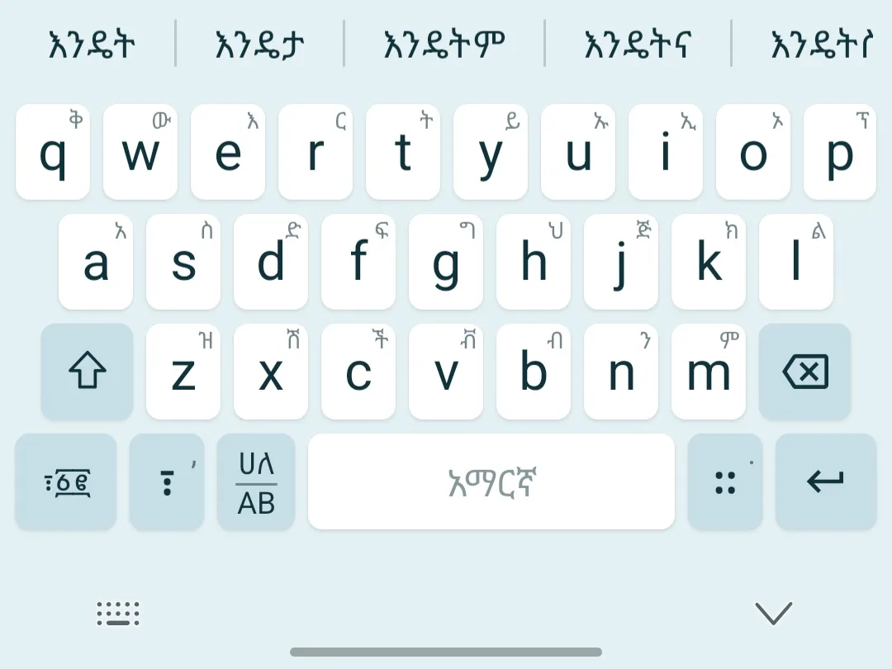
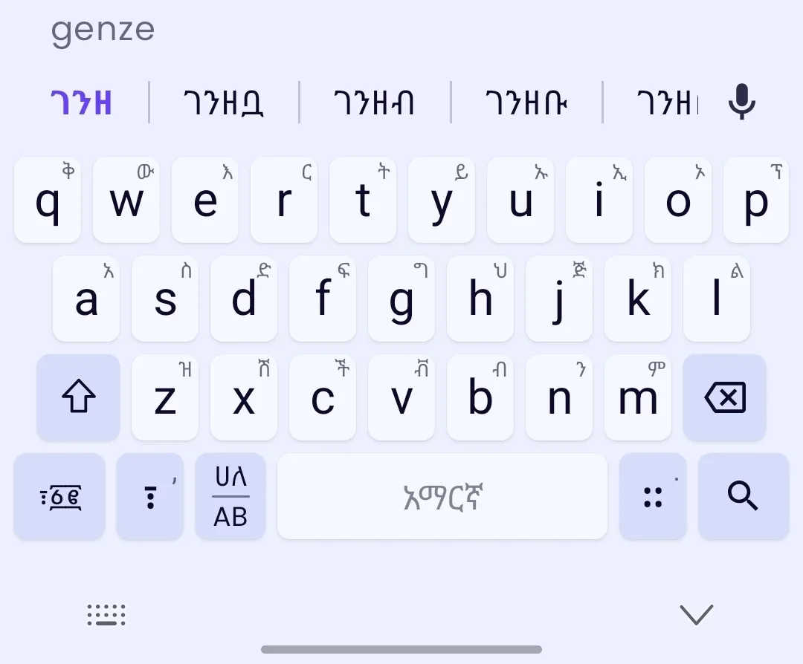
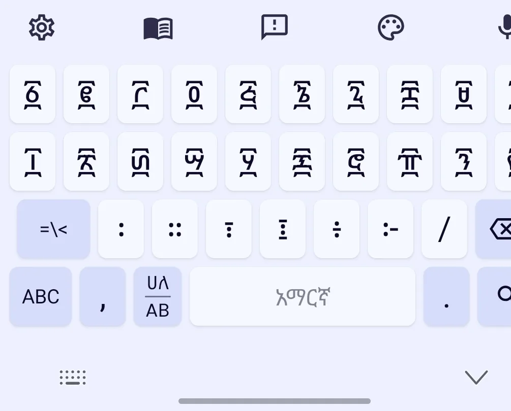
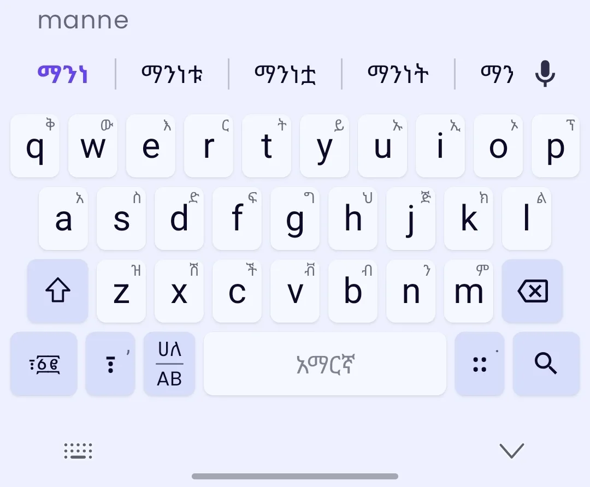
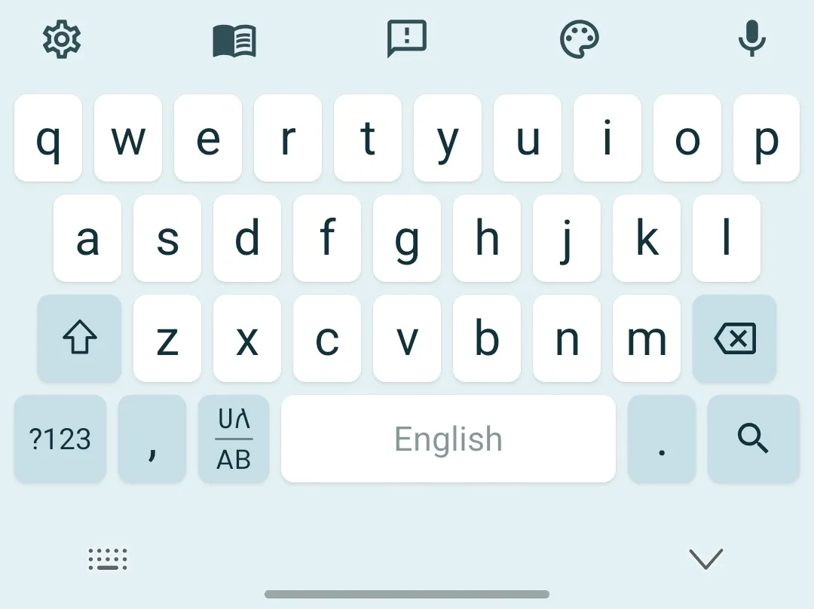
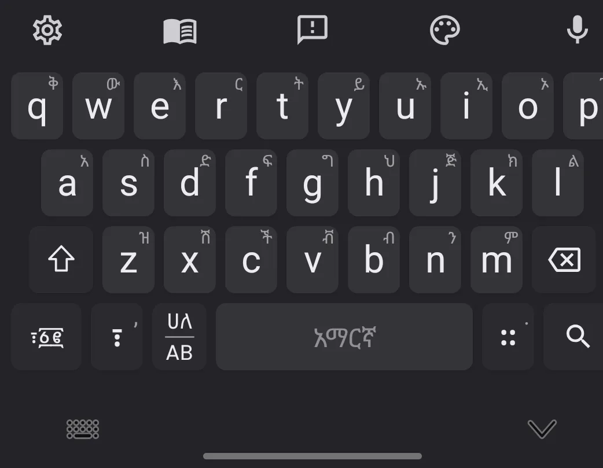
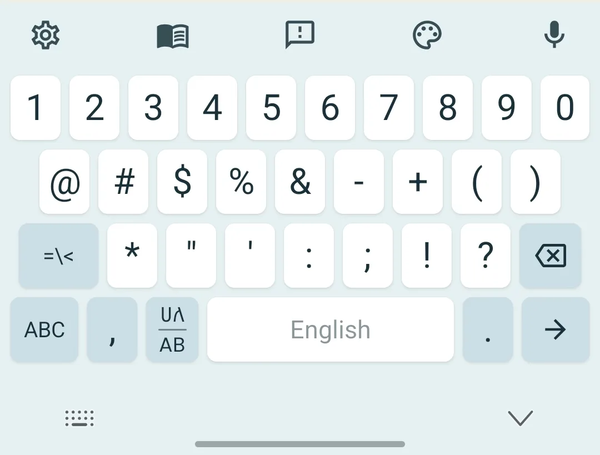

What is Addiyon Keyboard?
Addiyon Keyboard is an Android Amharic keyboard for typing in the Ge'ez / Fidel script. It includes Latin to Fidel transliteration, Amharic autocomplete, Ethiopic numerals, punctuation, and an English layout.
Addiyon Keyboard helps you type Amharic on Android: write the sound in Latin letters and watch it become Fidel, live. The complete Ge'ez script, every Ethiopic numeral, and smart offline autocomplete, in every app on your phone.

Addiyon Keyboard is made for Amharic typing, not retrofitted from a generic keyboard. It gives Ethiopian and Amharic-speaking users a practical way to write Fidel text in chats, search, notes, documents, and social apps.
Use Latin sounds like selam to compose ሰላም, switch to a full Amharic layout when you want direct control, and keep English QWERTY nearby for mixed-language writing.
Every Fidel letter across all seven orders, plus every Amharic special character: punctuation like ፣ ። ፤ ፥, the word-space ፡, and the full set of labialized forms. Nothing in the script is missing.

Full support for Ethiopic numerals: ones, tens, hundreds and beyond. Write dates, prices and lists the traditional way, right inside any app.

Frequency-ranked suggestions from large built-in dictionaries, and it's smart about ambiguity. It reconciles capitalization intelligently, keeping proper nouns proper while respecting exactly what you typed.

Type the sound; the whole word is re-read on every keystroke and shown underlined until you commit.
~182,000 Amharic and ~250,000 English words, all stored on-device. No connection needed.
Switch between Amharic and a standard QWERTY English keyboard with one tap.
Multiple keyboard color themes with automatic light and dark support.
It's a system keyboard, so it works in every app on your phone, from chat to search.
Your typing is processed on your device, never sold, never shared. Read our privacy policy.
Addiyon Keyboard is an Android Amharic keyboard for typing in the Ge'ez / Fidel script. It includes Latin to Fidel transliteration, Amharic autocomplete, Ethiopic numerals, punctuation, and an English layout.
Type the sound of the Amharic word with Latin letters, such as selam. Addiyon previews the Fidel version, ሰላም, so you can commit it with a tap.
Yes. Addiyon supports Ethiopic numerals including ፩ ፪ ፫ ፲ ፻ ፼, plus Amharic punctuation and special characters used in traditional writing.
Yes. Transliteration, suggestions, and dictionary lookups run on your Android device. The keyboard does not send your typed text to an Addiyon server.
Yes. Addiyon is a system keyboard, so it works anywhere Android lets you type: messaging apps, search boxes, notes, email, social media, and browsers.
No. Online Amharic keyboards work inside a website. Addiyon Keyboard works across Android apps, so you can type Amharic text directly where you need it.



Type what you hear. Addiyon reads the whole word and turns it into Fidel, instantly.
Type the sounds in Latin.
See the Fidel compose, live.
Tap a suggestion to commit.
Get Addiyon Keyboard on Google Play and start typing Amharic today.
Get it on Google Play